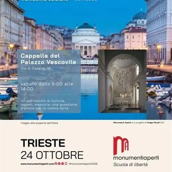

sab 24 ott
Generazione Monumenti Aperti - visite alla Cappella del Palazzo Vescovile
La Cappella della Santissima Trinità, vero e proprio gioiello dell’Art Nouveau, si trova all’interno del Palazzo Vescovile di Trieste. Fu realizzata nel 1913 dall’architetto Ivan Vurnik: la raffinata stilizzazione dei motivi decorativi, i dettagli geometrici, il dominio della…
 Indicazioni
Indicazioni
- Costi e prenotazioni
- Costo non indicato · Prenotazione non indicata
- Programma
- Programma da verificare. Apri la fonte ufficiale per orari e possibili aggiornamenti.
- In caso di maltempo
- Nessuna indicazione specifica pubblicata.
- Note
- Acquisito automaticamente dalla fonte.
L’EVENTO
Descrizione completa
La Cappella della Santissima Trinità, vero e proprio gioiello dell’Art Nouveau, si trova all’interno del Palazzo Vescovile di Trieste. Fu realizzata nel 1913 dall’architetto Ivan Vurnik: la raffinata stilizzazione dei motivi decorativi, i dettagli geometrici, il dominio della bicromia del bianco e oro la rendono uno splendido esempio dello stile secessione viennese (Sezession), portato coraggiosamente in un luogo sacro. Palazzo Vicco viene destinato a Episcopio (residenza della Curia Vescovile) nel 1841, col vescovo Matteo Ravnikar. All’epoca vi era all’interno una cappella dedicata alla Madonna Addolorata. Nel 1911 diventa Vescovo di Trieste e Capodistria Andrej Karlin, che due anni dopo commissiona all’architetto emergente Ivan Vurnik la modifica della cappella esistente. Ivan Vurnik (1884- 1971) nasce a Radovljica, nell’alta Carniola slovena, al tempo parte dell’impero austriaco come Trieste. Frequenta il liceo a Lubiana, e in seguito si forma a Vienna specializzandosi nella scuola di Otto Wagner e manifestando da subito il gusto per la secessione viennese. In seguito, Vurnik verrà considerato – con Max Fabiani e Jože Plečnik – padre fondatore della cuola architettonica slovena. Vurnik inizia i lavori di rinnovamento della cappella nel 1913 e li porta a termine in meno di un anno. Tutto l’ambiente si basa su due colori: il bianco e l’oro. Il primo si trova nel marmo di Carrara delle sculture, nelle pareti e nel mosaico, e si alterna all’oro delle decorazioni con smalto dorato, al tabernacolo e alla foglia d’oro che ricopre i capitelli. Alla moglie di Vurnik, la pittrice e decoratrice Helena Kottler, si devono i due dipinti che raffigurano l’Annunciazione della Vergine e l’adorazione della Croce di San Andrea. Una curiosità: i banchi che si trovano all’interno della cappella provengono dall’arredo sacro del transatlantico Rex, e furono recuperati per volere del vescovo di Trieste Monsignor Antonio Santin (vescovo dal 1938 al 1975). Tra le opere d’arte ancora poco conosciute della città, la Cappella dell’Episcopio rappresenta un prezioso esempio di stile liberty nella sua versione viennese, eredità del passato mitteleuropeo della città, e coinvolge emotivamente il visitatore con la sua bicromia bianco e oro, le decorazioni geometriche, il carattere innovativo e solenne: come scrisse in una lettera al committente vescovo Karlin lo stesso Vurnik: “guardando quest’opera nessuno rimarrà impassibile!”.
Visita dalle 9.00 alle 14.00.
Le visite sono guidate dagli allievi dell’Ente Acli Istruzione Professionale del Friuli Venezia Giulia Enaip di Trieste.
informazioni e prenotazioni: trieste@acli.it
IL PROGRAMMA
Programma e orari
Appuntamenti raccolti dalle fonti elencate. Dove manca un orario, non è ancora disponibile in questa scheda.
Programma pubblicato
- Dal 2026-10-24 al 2026-10-24
INFORMAZIONI UTILI
Prima di partire
- Controllare la fonte prima di partire.
ORGANIZZAZIONE